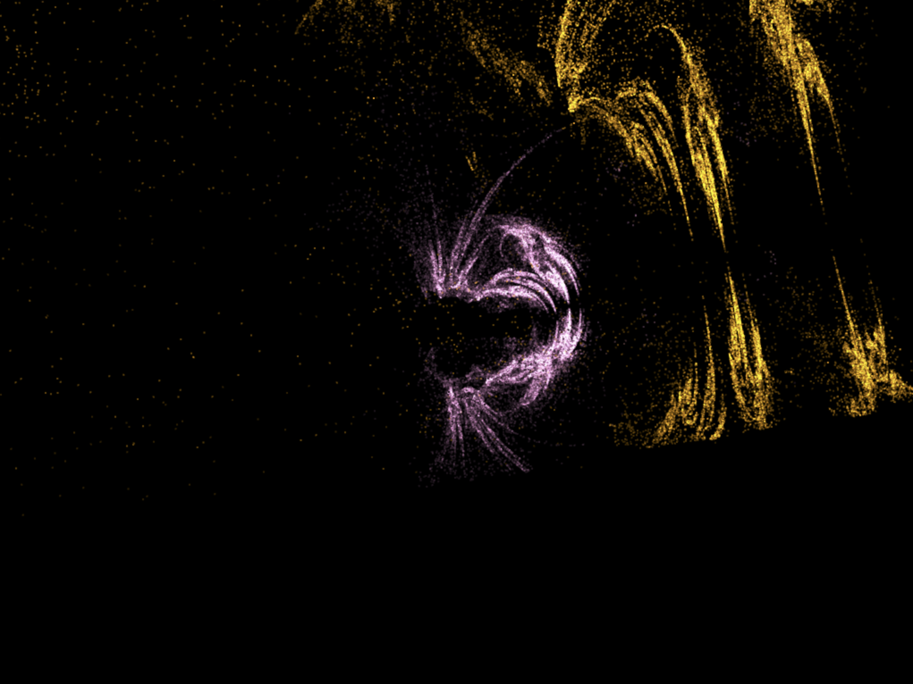
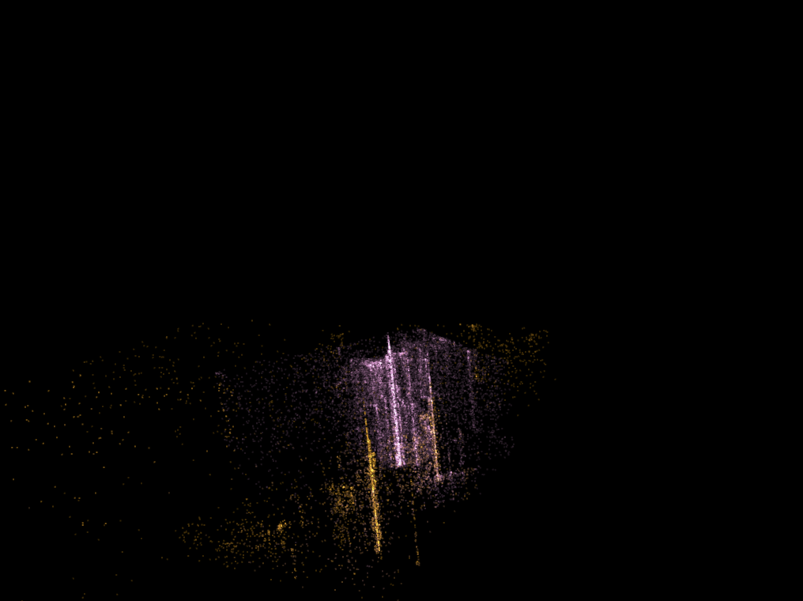
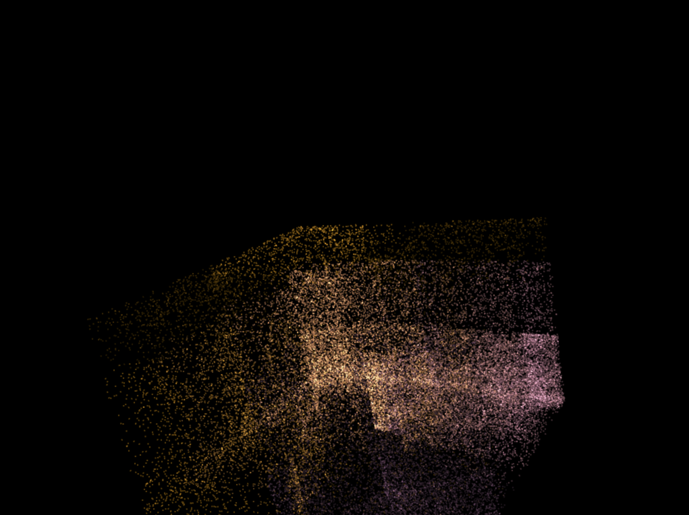
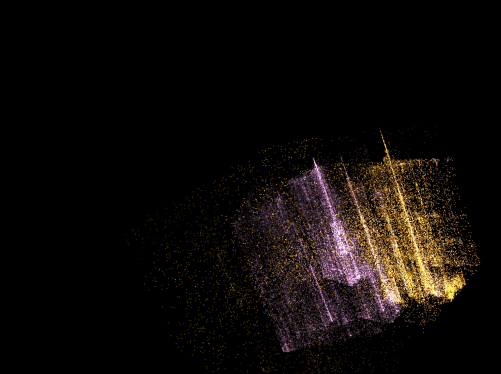

For the following images, the variations are represented as: {linear: 1, sinusoidal: 2, spherical: 3}. For example, a selection of the linear and sinusoidal variation can be represented as 2,3. All runs start with ‘Default’, which is only the linear variation. Since a random point in the bi-unit square is taken for the chaos game, the output will look different most of the time. The combinations I provided may not always have the same result, but it was what worked for me during that particular run.



